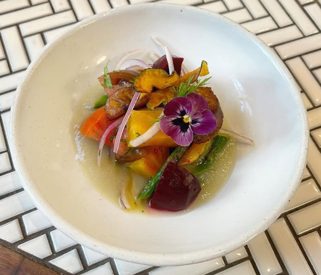
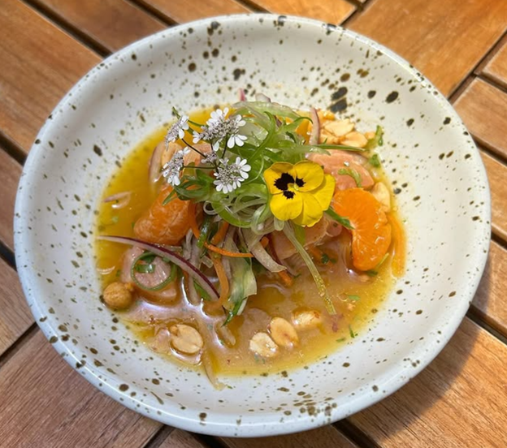
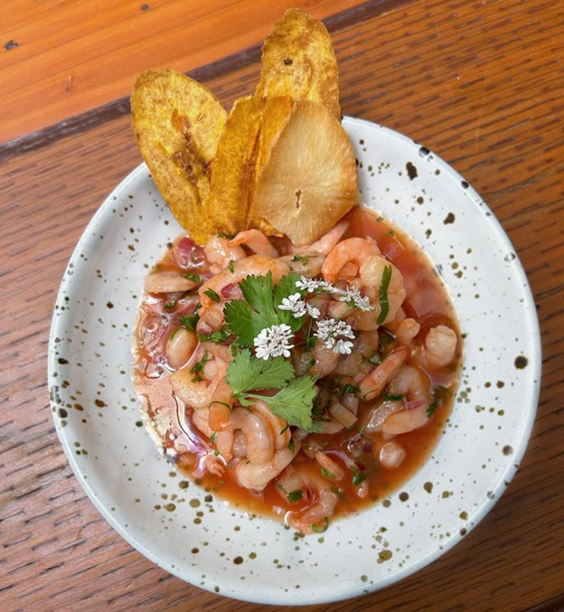

Pacifico
LATIN AMERICAN CUISINE
LATIN AMERICAN CUISINE
Chef Daniel’s specialty lies in his creative ceviches, offering both traditional fish-based and vibrant vegan options. Drawing inspiration from his Colombian roots and his culinary training in Peru, he expertly combines the freshest seafood with bold, zesty flavors, using citrus, herbs, and spices to elevate each dish. At the same time, his vegan ceviches offer a refreshing twist, using seasonal fruits and vegetables to replicate the bright, tangy experience of traditional ceviche. Whether featuring tender fish or plant-based ingredients like mango, jackfruit, or hearts of palm, Chef Daniel’s ceviches are a celebration of both the ocean’s bounty and the earth’s vibrant produce, ensuring there’s something for everyone to enjoy.

Pickled red and gold beets, sweet plantains, heriloom tomatoes, sunchoke leche de Tigre, avocado, kabocha squash chips and grilled asparagus served with yuca chips.
$18.99

Farmed island salmon, mandarin leche de tigre, mandarin pieces, picked daikon, cucumbers and carrots, red and green onions julienne sesame oil, spicy peanuts. Served with plantain and yuca chips.
$25.99

Poached shrimp, rocoto and tomato leche de tigre, red onions and cilantro served with plantain chips.
$25.99